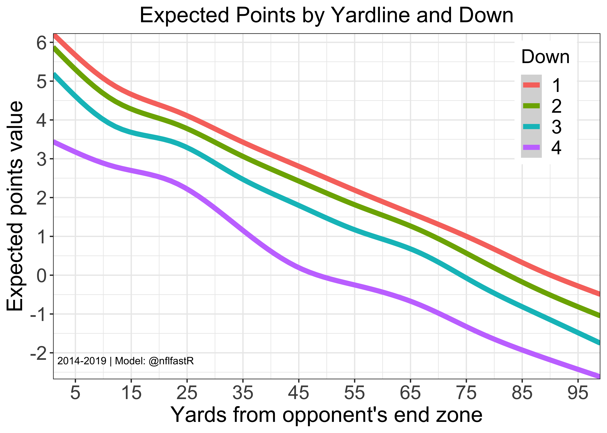
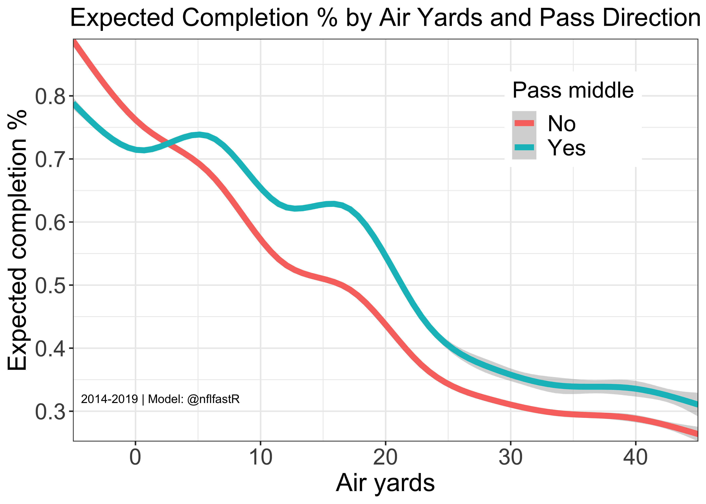

nflfastR is a set of functions to efficiently scrape NFL play-by-play data. nflfastR expands upon the features of nflscrapR:
- The package contains NFL play-by-play data back to 1999
- As suggested by the package name, it obtains games much faster
- Includes completion probability (
cp), completion percentage over expected (cpoe), and expected yards after the catch (xyac_epaandxyac_mean_yardage) in play-by-play going back to 2006 - Includes drive information, including drive starting position and drive result
- Includes series information, including series number and series success
- Hosts a repository of play-by-play data going back to 1999 for very quick access
- Features models for Expected Points, Win Probability, Completion Probability, and Yards After the Catch (see section below)
- Includes a function
update_db()that creates and updates a database
We owe a debt of gratitude to the original nflscrapR team, Maksim Horowitz, Ronald Yurko, and Samuel Ventura, without whose contributions and inspiration this package would not exist.
Installation
The easiest way to get nflfastR is to install it from CRAN with:
install.packages("nflfastR")To get a bug fix or to use a feature from the development version, you can install the development version of nflfastR either from GitHub with:
if (!require("pak")) install.packages("pak")
pak::pak("nflverse/nflfastR")or prebuilt from the development repo with:
install.packages("nflfastR", repos = c("https://nflverse.r-universe.dev", getOption("repos")))Usage
We have provided some application examples in the Getting Started article. However, these require a basic knowledge of R. For this reason we have the nflfastR beginner’s guide, which we recommend to all those who are looking for an introduction to nflfastR with R.
You can find column names and descriptions in the Field Descriptions article, or by accessing the field_descriptions dataframe from the package.
Data access
Even though nflfastR is very fast, we recommend downloading the data from here or using the nflreadr package. These data sets include play-by-play data of complete seasons going back to 1999 and are updated nightly during the season. The files contain both regular season and postseason data, and one can use game_type or week to figure out which games occurred in the postseason.
nflfastR models
nflfastR uses its own models for Expected Points, Win Probability, Completion Probability, and Expected Yards After the Catch. To read about the models, please see this post on Open Source Football. For a more detailed description of the motivation for Expected Points models, we highly recommend this paper from the nflscrapR team located here.
Here is a visualization of the Expected Points model by down and yardline.

Here is a visualization of the Completion Probability model by air yards and pass direction.

nflfastR includes two win probability models: one with and one without incorporating the pre-game spread.
Special thanks
- To Nick Shoemaker for finding and making available JSON-formatted NFL play-by-play back to 1999 (
nflfastRuses this source for 1999 and 2000 and previously also used it for 2001-2010) - To Lau Sze Yui for developing a scraping function to access JSON-formatted NFL play-by-play beginning in 2001
- To Aaron Schatz and FTN Fantasy for providing charting data to correctly mark scrambles in the 1999-2005 seasons
- To Lee Sharpe for curating a resource for game information
- To Timo Riske, Lau Sze Yui, Sean Clement, and Daniel Houston for many helpful discussions regarding the development of the new
nflfastRmodels - To Zach Feldman and Josh Hermsmeyer for many helpful discussions about CPOE models as well as Peter Owen for many helpful suggestions for the CP model
- To Florian Schmitt for the logo design
- The many users who found and reported bugs in
nflfastR1.0 - And of course, the original
nflscrapRteam, Maksim Horowitz, Ronald Yurko, and Samuel Ventura, whose work represented a dramatic step forward for the state of public NFL research